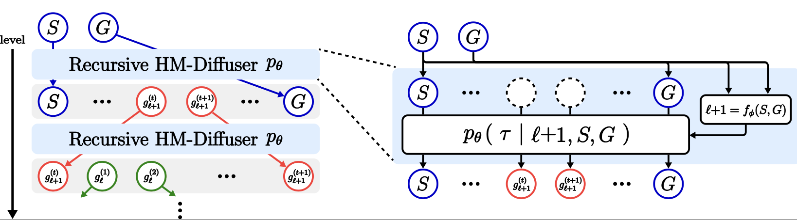
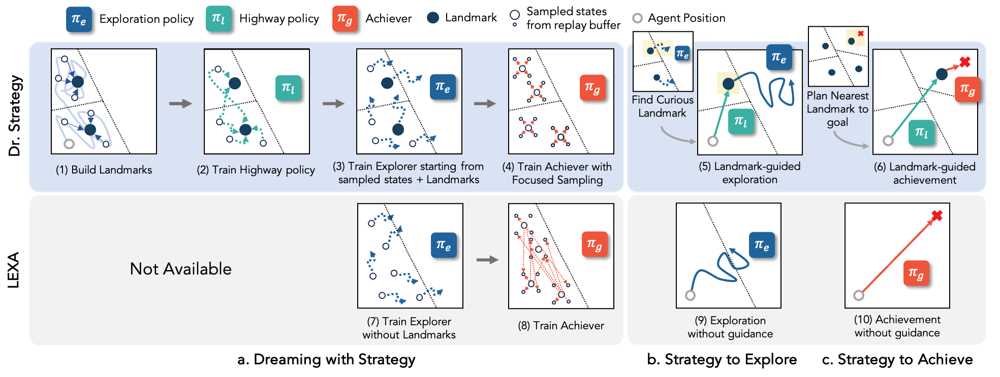
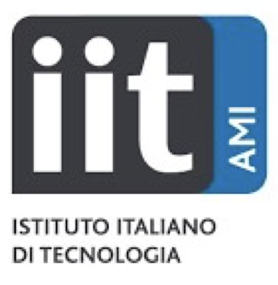
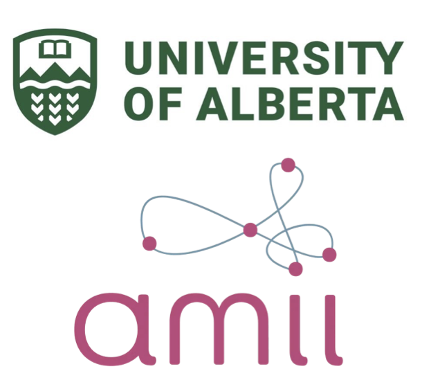
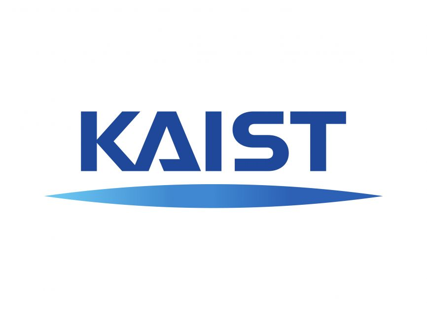

Highlighted Research
Full list available on Google Scholar.
*Equal Contribution
-

-

Dr. Strategy: Model-Based Generalist Agents with Strategic Dreaming
Hany Hamed*, Subin Kim*, Dongyeong Kim, Jaesik Yoon, Sungjin Ahn.
ICML
Research Experience
-

Artificial and Mechanical Intelligence Lab, IIT Genoa, Italy
— Present- Working on torque-control humanoid locomotion using reinforcement learning.
- Developing RL experiments for ErgoCub using IsaacLab.
- Working on a Sim2Real transfer framework.
-

University of Alberta & Amii (Remote)
— Present- Working on model-based RL for Sim2Real of robotics manipulation tasks.
- Assisted in research for mask-based goal representation for robot learning.
- Investigated TD-MPC2 and SAC for Sim-to-Sim transfer with finetuning in the target domain.
-

Machine Learning & Mind Lab, KAIST, Daejeon, South Korea
—- Worked on zero-shot task generalization for model-based RL.
- Worked on intrinsic motivation for hierarchical model-based RL agents.
- Worked on diffusion-based planning for long-horizon tasks.
-
Unmanned Technology Laboratory, Innopolis University, Russia
—- Developed ROS packages for drone modules including gimbal control, RTK GPS, and payload control.
- Integrated Livox lidar with lab’s drone for outdoor mapping.
- Developed a handheld Lidar device for indoor/outdoor mapping for an industrial partner.
-
Center of Robotics, Innopolis University, Russia
—- Conducted RL experiments for a stabilizing control policy of a tensegrity hopper.
- Designed and implemented a contactless differentiable physics simulator for tensegrity robots using Taichi.
- Performed research on sim2real transfer for a three-prism tensegrity robot.
Education
-
School of Computing, KAIST
– -
Computer Science, Innopolis University
–
Service
Reviewer
- Conferences: ICLR 2024, 2025, IROS 2024, ACML 2024, Humanoids 2025, AAAI 2026
- Workshops: ICML AutoRL 2024
- Journals: IEEE RA-L 2024
Teaching Assistant
-
CS492: Deep Reinforcement Learning
-
Introduction to ROS
Awards
- 2024 – ICML Travel Grant
- 2022–2024 – KAIST Graduate School Full Scholarship (Master)
- Fall 2020 – Outstanding Achievements, Innopolis University
- 2020, 2021 – Outstanding Contribution to Science, Innopolis University
- June 2021 – 3rd Place, DOTS Competition (Bristol Robotics Lab & Toshiba)
- 2018–2022 – Innopolis University Full Scholarship (Bachelor)